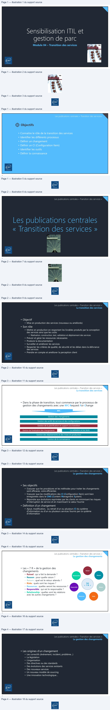
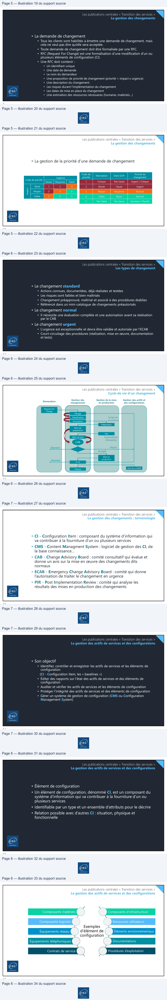
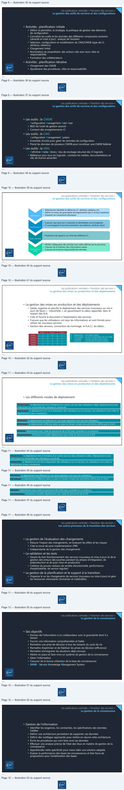
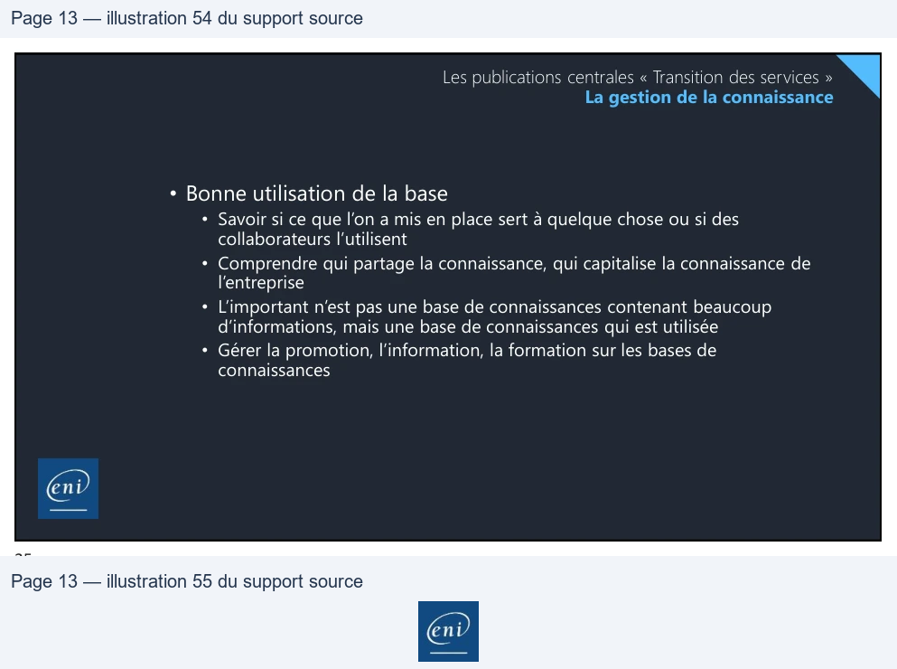
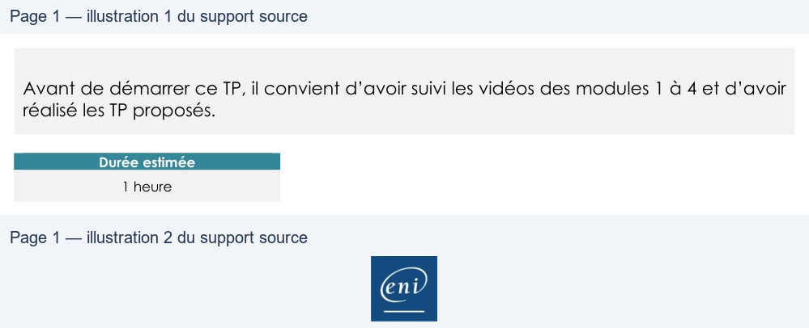
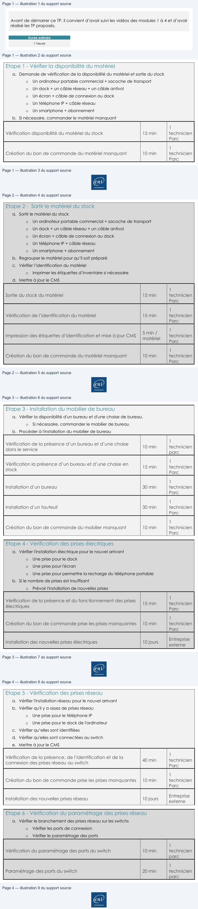
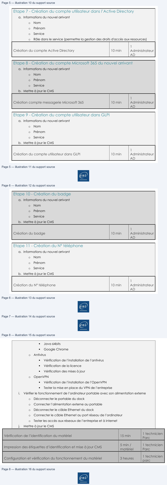
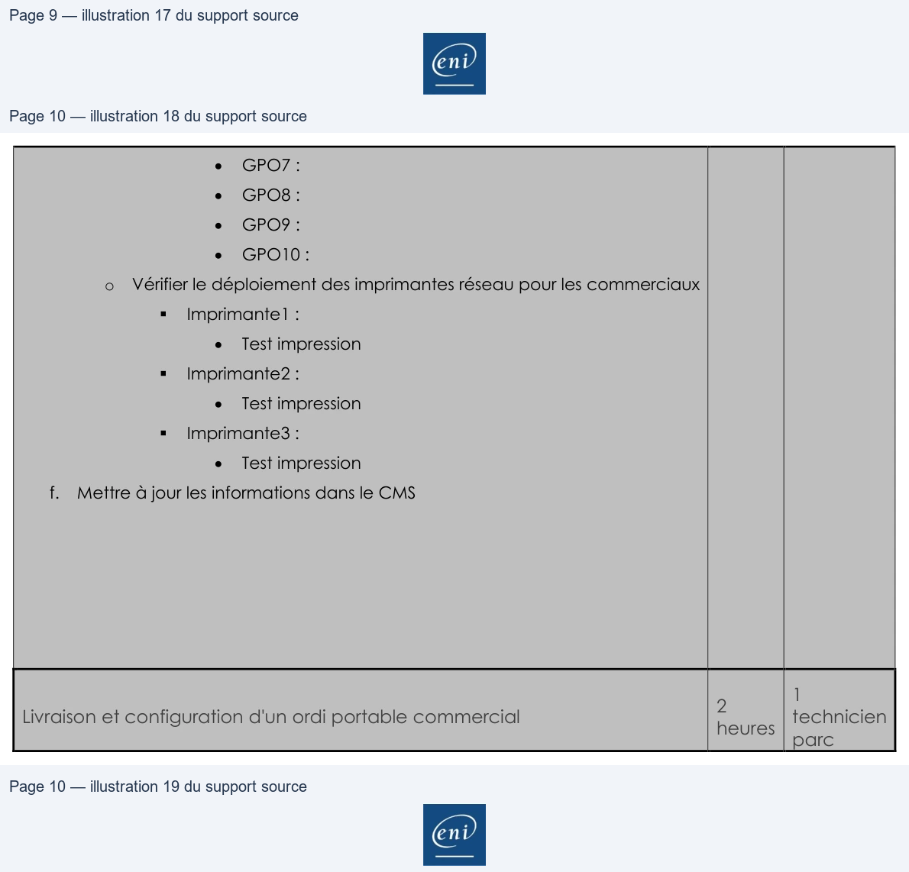

Module 04 — Transition des services¶
La transcription du support Drive et l’aide pédagogique sont séparées pour rendre leur provenance explicite.
SOURCE DRIVE · TRANSCRIPTION DU SUPPORT
Le contenu des documents du dossier TSSR est transcrit ci-dessous, page par page. Les textes, tableaux et illustrations sont intégrés à la page Web ; aucun PDF ENI n’est diffusé par ce lecteur. Les versions et les consignes restent celles des supports de formation. Les compléments IA sont conservés dans leur onglet distinct.
Support · Module 04 - Support de cours · 13 pages transcrites
Page 1
Sensibilisation ITIL et
gestion de parc
Module 04 – Transition des services
1
Les publications centrales « Transition des services»
Objectifs
• Connaitre le rôle de la transition des services
• Identifier les différents processus
• Définir un changement
• Définir un CI (Configuration Item)
• Identifier les outils
• Définir la connaissance
2
Texte relevé dans les illustrations
>
Page 2
Les publications centrales « Transition des services »
Les publications centrales
« Transition des services »
3
Les publications centrales « Transition des services »
La transition des services
• Objectif
• Mise en production des services (nouveaux ou améliorés)
• Son rôle
• Mettre en production en respectant les livrables produits par la conception
des services ainsi que les coûts
• Réalisation, construction, test, validation et déploiement des services
• Prévoir et gérer les ressources nécessaires
• Produire la documentation
• Surveiller et améliorer les services
• Respecter les critères de qualité, de sécurité et les délais dans la délivrance
des services
• Prendre en compte et améliorer la perception client
4
Texte relevé dans les illustrations
N
à
End
Page 3
Les publications centrales « Transition des services »
La transition des services
• Dans la phase de transition, tout commence par le processus de
gestion des changements avec une RFC Request For Change
RFC
Gestion des changements
Gestion des actifs de services et des configurations
Gestion de la planification et support à la transition
Gestion de l’évaluation des changements
La validation et les tests
Gestion des déploiements et des mises en production
Gestion de la connaissance
5
Les publications centrales « Transition des services »
La gestion des changements
• Ses objectifs
• S’assurer que les procédures et les méthodes pour traiter les changements
sont efficaces, voire efficientes
• S’assurer que les modifications des CI (Configuration Item) sont bien
enregistrées dans le CMS (Content Managment System)
• Répondre aux évolutions exprimées par les clients en minimisant les risques
d’interruption de service et en maximisant la valeur fournie
• Définition d’un changement
• Ajout, modification, ou retrait d’un ou plusieurs CI du système
d’information ou d’un ou plusieurs services fournis par ce système
d’information
6
Texte relevé dans les illustrations
a
nr
PE
ES
A
End
Page 4
Les publications centrales « Transition des services »
La gestion des changements
Raised
• Les « 7 R » de la gestion des
changements
Reason
Relationship
Les
« 7 R »
Responsible
Return
• Raised : qui a fait la demande ?
• Reason : pour quelle raison ?
• Return : quel est le retour attendu ?
• Risks : quels sont les risques ?
• Resources : quelles seront les ressources ?
• Responsible : qui est le responsable ?
• Relationship : quelles sont les relations
avec les autres changements ?
Resources
Risks
7
Les publications centrales « Transition des services »
La gestion des changements
• Les origines d’un changement
• Les correctifs (événement, incident, problème…)
• La législation
• L’organisation
• Des directives ou des standards
• Des évolutions des services existants
• Des nouveaux services
• Un nouveau modèle de sourcing
• Une innovation technologique…
8
Texte relevé dans les illustrations
e°e
D)
©
©
N
End

Page 5
Les publications centrales « Transition des services »
La gestion des changements
• La demande de changement
• Tous les clients sont habilités à émettre une demande de changement, mais
cela ne veut pas dire qu’elle sera acceptée.
• Toute demande de changement doit être formalisée par une RFC.
• RFC (Request For Change) est une formalisation d’une modification d’un ou
plusieurs éléments de configuration (CI).
• Une RFC doit contenir :
• Un identifiant unique
• Une date de demande
• Le nom du demandeur
• Une proposition de priorité de changement (priorité = impact x urgence)
• Une description du changement
• Les risques durant l’implémentation du changement
• Les dates de mise en place du changement
• Une estimation des ressources nécessaires (humaine, matériels…)
9
Les publications centrales « Transition des services »
La gestion des changements
• La gestion de la priorité d’une demande de changement
Code de
priorité
Description
Dans GLPI
Priorité de
changement
Urgence
Code de priorité
1
Critique
Très haute
Urgent / Critique
Elevée
Moyenne
Faible
Elevé
1
2
3
2
Elevée
Haute
Urgent
Moyen
2
3
4
3
Moyen
Moyenne
Normal
Impact
Faible
3
4
5
4
Faible
Basse
Normal
5
Très faible
Très basse
Standard / Planifié
10
Texte relevé dans les illustrations
eee
—
a eeee
ee ee RE A
a
(eee
ee
RE
Page 6
Les publications centrales « Transition des services »
Les types de changement
• Le changement standard
• Actions connues, documentées, déjà réalisées et testées
• Les risques sont faibles et bien maîtrisés
• Changement préapprouvé, maîtrisé et associé à des procédures établies
• Référencé dans un mini-catalogue de changements préautorisés
• Le changement normal
• Il nécessite une évaluation complète et une autorisation avant sa réalisation
par le CAB
• Le changement urgent
• L’urgence est exceptionnelle et devra être validée et autorisée par l’ECAB
• Court-circuitage des procédures (réalisation, mise en œuvre, documentation
et tests)
11
Les publications centrales « Transition des services »
Cycle de vie d’un changement
Gestion de la mise
Gestion des actifs et
Demandeur
Gestion des
changements
en production
des configurations
Request For
Change
Filtrage
Classification
Script de
procédure
Priorisation
Préparation
Bilan de
préparation
Test
Exploitabilité
Utilisabilité
Bilan de test
CAB
Report
Abandon
Accepté
Mise en
production
Abandon
P I R
MAJ de la CMDB
Clôture
12
Texte relevé dans les illustrations
N
=
ze!
=
ES
(min}
Page 7
Les publications centrales « Transition des services »
La gestion des changements : terminologie
• CI - Configuration Item : composant du système d’information qui
va contribuer à la fourniture d’un ou plusieurs services
• CMS - Content Managment System : logiciel de gestion des CI, de
la base connaissance…
• CAB - Change Advisory Board : comité consultatif qui évalue et
donne un avis sur la mise en œuvre des changements dits
normaux
• ECAB - Emergency Change Advisory Board : comité qui donne
l’autorisation de traiter le changement en urgence
• PIR - Post Implementation Review : comité qui analyse les
résultats des mises en production des changements
13
Les publications centrales « Transition des services »
La gestion des actifs de services et des configurations
• Son objectif
• Identifier, contrôler et enregistrer les actifs de services et les éléments de
configuration
(CI - Configuration Item, les « baselines »)
• Éditer des rapports sur l’état des actifs de services et des éléments de
configuration
• Auditer et vérifier les actifs de services et les éléments de configuration
• Protéger l’intégrité des actifs de services et des éléments de configuration
• Gérer un système de gestion de configuration (CMS ou Configuration
Management System)
14
Texte relevé dans les illustrations
>
Page 8
Les publications centrales « Transition des services »
La gestion des actifs de services et des configurations
• Élément de configuration
• Un élément de configuration, dénommé CI, est un composant du
système d’information qui va contribuer à la fourniture d’un ou
plusieurs services
• Identifiable par un type et un ensemble d’attributs pour le décrire
• Relation possible avec d’autres CI : situation, physique et
fonctionnelle
15
Les publications centrales « Transition des services »
La gestion des actifs de services et des configurations
Composants d’infrastructure
Composants matériels
Ressources utilisateurs
Composants logiciels
Éléments environnementaux
Équipements réseau
Exemples
d’élément de
configuration
Documentations
Équipements téléphoniques
Procédures d’exploitation
Contrats de service
16
Texte relevé dans les illustrations
A
End

Page 9
Les publications centrales « Transition des services »
La gestion des actifs de services et des configurations
• Activités : planification initiale
• Définir le périmètre, la stratégie, la politique de gestion des éléments
de configuration
• Connaître les outils et les données des différents composants existants
(véracité et mise à jour) : analyse de l’existant
• Sélection, configuration et modélisation du CMS/CMDB (type de CI,
attributs, relations)
• Chargement initial
• Nomination du propriétaire, des acteurs clés avec leurs rôles et
responsabilités
• Formation des collaborateurs
• Activités : planification itérative
• Chargement des CMDB
• Ajustement des procédures, rôles et responsabilités
17
Les publications centrales « Transition des services »
La gestion des actifs de services et des configurations
• Les outils : la CMDB
• Configuration Management Data Base
• BDD de l’outil de gestion associé
• Contient des enregistrements CI
• Les outils : le CMS
• Configuration Management System
• Ensemble d’outils pour gérer les données de configuration
• Prend les données de plusieurs CMDB pour constituer une CMDB fédérée
• Les outils : la DML
• Definitive Media Library : lieu de stockage sécurisé des CI logiciels
• Référence pour tous les logiciels : contient les médias, documentations et
clés de licence associées
18
Texte relevé dans les illustrations
N
>
Page 10
Les publications centrales « Transition des services »
La gestion des actifs de services et des configurations
• Sélectionner, identifier et définir les CI : attributs, relations, etc.
• Définir le niveau de granularité d’enregistrement des CI et leurs baselines
• Etiqueter les composants physiques
Identification
• S’assurer que seuls les CI autorisés et identifiables sont enregistrés
• CI accompagnés d’une documentation (ses relations, attributs, liens)
Contrôle des CI
• Production de rapports sur l’état des différents CI
Gestion des états
Vérifications et
• Vérifier l’adéquation des activités avec celles définies par le processus
• S’assurer de la fraîcheur des informations saisies
• S’assurer de la bonne disponibilité des données
audits
19
Les publications centrales « Transition des services »
La gestion des mises en production et des déploiements
• La gestion des mises en production et des déploiements
• Valide, organise et planifie le déploiement des services (nouveaux ou mis à
jour) de façon « industrielle », en garantissant la valeur apportée, dans le
respect des SLA.
• Crée et fournit le document à l’exploitation des services
• S’assure que les utilisateurs ont reçu les informations et sont formés pour
utiliser les nouveaux services
• Gestion des versions, convention de nommage, le R.A.C.I, les délais…
Fonction 1
Fonction 2
Fonction 3
Activité 1
A
R, C
C
Activité 2
A, I
R
C
Activité 3
A
R
C
R
– Responsible – qui réalise la tâche
A
– Accountable – qui est le responsable, celui qui valide
C
– Consulted
– qui est consulté comme expert
I
– Informed
– qui doit être forcément informé
Activité 4
A
R
C, I
Activité 5
A
R
C, I
20
Texte relevé dans les illustrations
EEae
|}
|} —_
Page 11
Les publications centrales « Transition des services »
La gestion des mises en production et des déploiements
• Les différents modes de déploiement
Mode Push : le déploiement est à l’initiative d’un centre vers les sites utilisateurs cibles. Déploiement d’une
mise à jour sur l’ensemble des utilisateurs concernés.
Mode Pull : le déploiement est mis à disposition des utilisateurs sur un serveur. Les utilisateurs vont initier le
déploiement à leur convenance.
Big bang : le déploiement est effectué en une seule opération vers tous les utilisateurs.
Par phase : le déploiement s’effectue selon un plan en tenant compte des périmètres définis par le client.
Manuel : déploiement avec l’aide du personnel de la DSI avec contrôles et surveillance.
Automatique : fortement conseillé, déploiement sans l’aide du personnel de la DSI.
21
Les publications centrales « Transition des services »
Les autres processus de la transition des services
• La gestion de l’évaluation des changements
• Mesure l’impact des changements, en évaluant les effets et les risques
• Crée la revue de post-implémentation (PIR)
• Indépendante de la gestion des changements
• La validation et les tests
• Garant du bon fonctionnement des services (nouveaux et mise à jour) et de la
gestion des erreurs découvertes pendant les phases d’intégration, de
préproduction et de post-mise en production
• Création de procès-verbaux de recette (fonctionnelle, performance,
d’exploitabilité, de service régulier)
• La gestion de la planification et le support à la transition
• Organise le ou les changements de services (nouveaux ou mise à jour) et gère
les ressources nécessaires (humaines et matérielles)
22
Page 12
Les publications centrales « Transition des services »
La gestion de la connaissance
• Ses objectifs
• Donner de l’information à un collaborateur avec la granularité dont il a
besoin
• Fournir une information compréhensible et fiable
• Permettre une prise de décision à tous les instants du cycle de vie
• Permettre d’optimiser et de fiabiliser les prises de décision (efficience)
• Permettre d’enregistrer les situations déjà connues
• Mettre en place et faire vivre un système de gestion de la connaissance
• Gérer l’information
• S’assurer de la bonne utilisation de la base de connaissances
• SKMS - Service Knowledge Management System
23
Les publications centrales « Transition des services »
La gestion de la connaissance
• Gestion de l’information
• Identifier les exigences, les contraintes, les spécifications des données
traitées
• Définir une architecture permettant de supporter ces données
• Définir des outillages appropriés pour mettre en œuvre cette architecture
• Écrire les procédures qui vont faire vivre ces données
• Effectuer une analyse précise de l’état des lieux en matière de gestion de la
connaissance
• Appréhender cette spécificité pour mieux bâtir une solution adaptée
• Évaluer la performance des bases de connaissances et être force de
propositions pour l’amélioration des bases
24
Texte relevé dans les illustrations
N
>

Page 13
Les publications centrales « Transition des services »
La gestion de la connaissance
• Bonne utilisation de la base
• Savoir si ce que l’on a mis en place sert à quelque chose ou si des
collaborateurs l’utilisent
• Comprendre qui partage la connaissance, qui capitalise la connaissance de
l’entreprise
• L’important n’est pas une base de connaissances contenant beaucoup
d’informations, mais une base de connaissances qui est utilisée
• Gérer la promotion, l’information, la formation sur les bases de
connaissances
25
Texte relevé dans les illustrations
N

Référence du document : 1CH-nXTabYXiRxfIZKOiUCyEIco1T8x6q · SHA-256 6ab33825d3402c7f…
Énoncé · M04 - S01 TP-Transition des services · 1 pages transcrites
Page 1
Sensibilisation à ITIL
ITIL-La transition des services
TP du Module 04 - La transition des services
Avant de démarrer ce TP, il convient d’avoir suivi les vidéos des modules 1 à 4 et d’avoir
réalisé les TP proposés.
Durée estimée
1 heure
Énoncé
On vous demande d'étudier un nouveau service :
o Accueil d'un nouveau salarié commercial.
1. Stratégie des Services
o Vous avez défini les grandes lignes de ce nouveau service.
2. Conception des Services
o Vous avez détaillé les différentes étapes du service.
3. Transition des Services
o Vous allez définir les temps d'intervention et le rôle de chaque technicien pour
chaque étape.
Page 1/1
© ENI – Tous droits réservés
Texte relevé dans les illustrations
|

Référence du document : 1TTngfnVbMBHx7Ivr602MAbu9yIZV_uC5 · SHA-256 6a370c3454c4f25e…
Correction · M04 - S01 TP-Corrigé_Transition des services · 10 pages transcrites
Correction originale : à consulter après avoir tenté l’exercice.
Page 1
Sensibilisation à ITIL
ITIL - La transition des services
TP du Module 04 - La transition des services
Avant de démarrer ce TP, il convient d’avoir suivi les vidéos des modules 1 à 4 et d’avoir
réalisé les TP proposés.
Durée estimée
1 heure
Solution
Etape 1 - Vérifier la disponibilité du matériel
a. Demande de vérification de la disponibilité du matériel et sortie du stock
o Un ordinateur portable commercial + sacoche de transport
o Un dock + un câble réseau + un câble antivol
o Un écran + câble de connexion au dock
o Un téléphone IP + câble réseau
o Un smartphone + abonnement
b. Si nécessaire, commander le matériel manquant
Vérification disponibilité du matériel du stock
15 min
1
technicien
Parc
Création du bon de commande du matériel manquant
10 min
1
technicien
Parc
Page 1/10
© ENI – Tous droits réservés
| Vérification disponibilité du matériel du stock | 15 min | 1 technicien |
| Parc | ||
| Création du bon de commande du matériel manquant | 10 min | 1 technicien |
| Parc |
Page 2
Sensibilisation à ITIL
Etape 2 - Sortir le matériel du stock
a. Sortir le matériel du stock
o Un ordinateur portable commercial + sacoche de transport
o Un dock + un câble réseau + un câble antivol
o Un écran + câble de connexion au dock
o Un téléphone IP + câble réseau
o Un smartphone + abonnement
b. Regrouper le matériel pour qu’il soit préparé
c. Vérifier l’identification du matériel
o Imprimer les étiquettes d’inventaire si nécessaire
d. Mettre à jour le CMS
Sortie du stock du matériel
15 min
1
technicien
Parc
Vérification de l’identification du matériel
15 min
1
technicien
Parc
Impression des étiquettes d’identification et mise à jour CMS
5 min /
matériel
1
technicien
Parc
Création du bon de commande du matériel manquant
10 min
1
technicien
Parc
Page 2/10
© ENI – Tous droits réservés
| d Mettre à jour le CMS . | ||
| Sortie du stock du matériel | 15 min | 1 technicien |
| Parc | ||
| Vérification de l’identification du matériel | 15 min | 1 technicien |
| Parc | ||
| Impression des étiquettes d’identification et mise à jour CMS | 5 min / matériel | 1 technicien Parc |
| Création du bon de commande du matériel manquant | 10 min | 1 technicien |
| Parc |
Page 3
Sensibilisation à ITIL
Etape 3 - Installation du mobilier de bureau
a. Vérifier la disponibilité d'un bureau et d'une chaise de bureau.
o Si nécessaire, commander le mobilier de bureau
b. Procéder à l'installation du mobilier de bureau
Vérification de la présence d’un bureau et d’une chaise
dans le service
10 min
1
technicien
parc
Vérification la présence d’un bureau et d’une chaise en
stock
15 min
1
technicien
Parc
Installation d’un bureau
30 min
1
technicien
Parc
Installation d’un fauteuil
30 min
1
technicien
Parc
Création du bon de commande du mobilier manquant
10 min
1
technicien
Parc
Etape 4 - Vérification des prises électriques
a. Vérifier l'installation électrique pour le nouvel arrivant
o Une prise pour le dock
o Une prise pour l'écran
o Une prise pour permettre la recharge du téléphone portable
b. Si le nombre de prises est insuffisant
o Prévoir l'installation de nouvelles prises
Vérification de la présence et du fonctionnement des prises
électriques
15 min
1
technicien
Parc
Création du bon de commande prise les prises manquantes
10 min
1
technicien
Parc
Installation des nouvelles prises électriques
10 jours
Entreprise
externe
Page 3/10
© ENI – Tous droits réservés
Texte relevé dans les illustrations
8
| a Vérifier la disponibilité d'unbureau etd'une chaise de bureau . . | ||
| Si nécessaire commander le mobilier de bureau o , | ||
| b Procéder à l'installation du mobilier de bureau . | ||
| Vérification de la présence d’un bureau et d’une chaise dans le service | 10 min | 1 technicien |
| parc | ||
| Vérification la présence d’un bureau et d’une chaise en stock | 15 min | 1 technicien Parc |
| Installation d’un bureau | 30 min | 1 technicien |
| Parc | ||
| Installation d’un fauteuil | 30 min | 1 technicien |
| Parc | ||
| Création du bon de commande du mobilier manquant | 10 min | 1 technicien |
| Parc | ||
| Etape 4 Vé rification des prises électriques - | ||
| a Vérifier l'installationélectrique pour le nouvelarrivant . | ||
| Une prisepour le dock o | ||
| Une prisepour l'écran o | ||
| Une prisepour permettre larecharge du téléphoneportable o | ||
| b Si le nombre de prisesest insuffisant . | ||
| Prévoir l'installationdenouvelles prises o | ||
| Vérification de la présence et du fonctionnement des prises électriques | 15 min | 1 technicien Parc |
| Création du bon de commande prise les prises manquantes | 10 min | 1 technicien |
| Parc | ||
| Installation des nouvelles prises électriques | 10 jours | Entreprise externe |
Page 4
Sensibilisation à ITIL
Etape 5 - Vérification des prises réseau
a. Vérifier l'installation réseau pour le nouvel arrivant
b. Vérifier qu'il y a assez de prises réseau
o Une prise pour le téléphone IP
o Une prise pour le dock de l'ordinateur
c. Vérifier qu’elles sont identifiées
d. Vérifier qu'elles sont connectées au switch
e. Mettre à jour le CMS
Vérification de la présence, de l’identification et de la
connexion des prises réseau au switch
40 min
1
technicien
Parc
Création du bon de commande prise les prises manquantes
10 min
1
technicien
Parc
Installation des nouvelles prises réseau
10 jours
Entreprise
externe
Etape 6 - Vérification du paramétrage des prises réseau
a. Vérifier le branchement des prises réseau sur les switchs
o Vérifier les ports de connexion
o Vérifier le paramétrage des ports
Vérification du paramétrage des ports du switch
10 min
1
technicien
parc
Paramétrage des ports du switch
20 min
1
technicien
parc
Page 4/10
© ENI – Tous droits réservés
| Etape 5 Vé rification des prises ré seau - | ||
| a Vérifier l'installationréseau pour le nouvelarrivant . | ||
| b Vérifier qu'il ya assez de prises réseau . | ||
| Une prisepour le téléphone IP o | ||
| Une prisepour le dockde l'ordinateur o | ||
| c Vérifier qu’elles sont identifiées . | ||
| d Vérifier qu'elles sontconnectées au switch . | ||
| e Mettre à jour le CMS . | ||
| Vérification de la présence de l’identification et de la , connexion des prises réseau au switch | 40 min | 1 technicien Parc |
| Création du bon de commande prise les prises manquantes | 10 min | 1 technicien |
| Parc | ||
| Installation des nouvelles prises réseau | 10 jours | Entreprise externe |
| Etape 6 Vé rification du paramétrage des prises ré seau - | ||
| a Vérifier le branchement des prises réseau sur les switchs . | ||
| Vérifier les ports de connexion o | ||
| Vérifier le paramétrage des ports o | ||
| Vérification du paramétrage des ports du switch | 10 min | 1 technicien |
| parc | ||
| Paramétrage des ports du switch | 20 min | 1 technicien |
| parc |

Page 5
Sensibilisation à ITIL
Etape 7 - Création du compte utilisateur dans l’Active Directory
a. Informations du nouvel arrivant
o Nom
o Prénom
o Service
o Rôle dans le service (permettre la gestion des droits d'accès aux ressources)
Création du compte Active Directory
10 min
1
Administrateur
AD
Etape 8 - Création du compte Microsoft 365 du nouvel arrivant
a. Informations du nouvel arrivant
o Nom
o Prénom
o Service
b. Mettre à jour le CMS
Création compte messagerie Microsoft 365
10 min
1
Administrateur
AD
Etape 9 - Création du compte utilisateur dans GLPI
a. Informations du nouvel arrivant
o Nom
o Prénom
o Service
b. Mettre à jour le CMS
Création du compte utilisateur dans GLPI
10 min
1
Administrateur
AD
Page 5/10
© ENI – Tous droits réservés
Texte relevé dans les illustrations
oo
oo
| Création compte messagerie Microsoft 365 | 10 min | 1 Administrateur |
| AD |
| Création du compte utilisateur dans GLPI | 10 min | 1 Administrateur |
| AD |
Page 6
Sensibilisation à ITIL
Etape 10 - Création du badge
a. Informations du nouvel arrivant
o Nom
o Prénom
o Service
b. Mettre à jour le CMS
Création du badge
10 min
1
Administrateur
AD
Etape 11 - Création du N° téléphone
a. Informations du nouvel arrivant
o Nom
o Prénom
o Service
b. Mettre à jour le CMS
Création du N° téléphone
10 min
1
Administrateur
AD
Page 6/10
© ENI – Tous droits réservés
Texte relevé dans les illustrations
oe
| Etape 11 Cré ation du N° télé phone - a Informations du nouvelarrivant . Nom o Prénom o Service o b Mettre à jour le CMS . | ||
| Création du N° téléphone | 10 min | 1 Administrateur AD |
Page 7
Sensibilisation à ITIL
Etape 12 - Configuration d’un ordinateur portable
a. Vérifier le fonctionnement téléphone IP et de son câble RJ45
o Connecter le téléphone IP sur le réseau (câble RJ45 sur le port 1 du switch du
téléphone)
o Alimenter le téléphone
o Renseigner les paramètres de l’utilisateur
▪
Passer un appel interne
▪
Passer un appel externe
▪
Recevoir un appel
b. Vérifier le fonctionnement du dock
o Alimenter le dock avec son alimentation
o Connecter le dock avec le câble réseau au port 2 du switch du téléphone
c. Tester le clavier et la souris
o Connecter les deux périphériques au dock
d. Vérifier le fonctionnement du moniteur et de son câble Display-Port
o Alimenter le moniteur
o Connecter l’écran au dock avec le câble Display-Port
e. Vérifier le fonctionnement de l’ordinateur portable
o Connecter le portable au dock
f. Déployer le système d’exploitation à partir du Serveur WDS
o Vérifier que l’ordinateur démarre en UEFI
o Booter à partir du réseau PXE pour se connecter au serveur de déploiement
▪
Choisir l’image « commercial itinérant – Win11 – Off365 »
g. Finaliser l’installation du système d’exploitation
o Procéder à la mise à jour de l’OS et du pack Office via Windows Update
o Régler la résolution du deuxième écran
h. Vérifier l’installation des logiciels
o Pack Office
▪
Word
▪
Excel
▪
Outlook
▪
Powerpoint
o Utilitaires
▪
Acrobat Reader DC
▪
7Zip 64bits
Page 7/10
© ENI – Tous droits réservés
Page 8
Sensibilisation à ITIL
▪
Java 64bits
▪
Google Chrome
o Antivirus
▪
Vérification de l’installation de l’antivirus
▪
Vérification de la licence
▪
Vérification des mises à jour
o OpenVPN
▪
Vérification de l’installation de l’OpenVPN
▪
Tester la mise en place du VPN de l’entreprise
i.
Vérifier le fonctionnement de l’ordinateur portable avec son alimentation externe
o Déconnecter le portable du dock
o Connecter l’alimentation externe au portable
o Déconnecter le câble Ethernet du dock
o Connecter le câble Ethernet au port réseau de l’ordinateur
o Tester les accès aux réseaux de l’entreprise et à internet
j.
Mettre à jour le CMS
Vérification de l’identification du matériel
15 min
1 technicien
Parc
Impression des étiquettes d’identification et mise à jour CMS
5 min /
matériel
1 technicien
Parc
Configuration et vérification du fonctionnement du matériel
3 heures
1 technicien
parc
Page 8/10
© ENI – Tous droits réservés
| Vérification de l’identification du matériel | 15 min | 1 technicien Parc |
| Impression des étiquettes d’identification et mise à jour CMS | 5 min / matériel | 1 technicien Parc |
| Configuration et vérification du fonctionnement du matériel | 3 heures | 1 technicien parc |

Page 9
Sensibilisation à ITIL
Etape 13 - Livraison du matériel sur site
a. Installer le téléphone IP
o Brancher le câble RJ45 sur la prise murale RJ45
▪
Câble RJ45 de 5m
▪
Noter le numéro de la prise murale dans le tableau ci-dessous
o Vérifier que le téléphone est alimenté (POE)
▪
Passer un appel en interne
▪
Passer un appel en externe
▪
Recevoir un appel
b. Installer le dock
o Brancher le dock sur le switch du téléphone IP (port 2)
▪
Câble RJ45 de 2m
o Brancher électriquement le dock
c. Installer les périphériques
o Connecter le clavier sur le dock en USB
o Connecter la souris sur le dock en USB
d. Installer le moniteur
o Brancher le câble Display-Port au dock et sur le moniteur
o Brancher électriquement le moniteur
e. Installer l’ordinateur portable
o Ouvrer la session avec un compte technicien du domaine
▪
Vérifier l’obtention d’une configuration réseau à partir du
serveur DHCP
▪
Vérifier l’application des GPO du domaine
▪
Vérifier le fonctionnement du deuxième écran
o Ouvrer la session avec le compte générique « Commercial itinérant »
du domaine
▪
Vérifier
l’application
des
GPO
du
domaine
pour
les
commerciaux itinérants
•
GPO1 :
•
GPO2 :
•
GPO3 :
•
GPO4 :
•
GPO5 :
•
GPO6 :
Page 9/10
© ENI – Tous droits réservés
Texte relevé dans les illustrations
|
Page 10
Sensibilisation à ITIL
•
GPO7 :
•
GPO8 :
•
GPO9 :
•
GPO10 :
o Vérifier le déploiement des imprimantes réseau pour les commerciaux
▪
Imprimante1 :
•
Test impression
▪
Imprimante2 :
•
Test impression
▪
Imprimante3 :
•
Test impression
f. Mettre à jour les informations dans le CMS
Livraison et configuration d'un ordi portable commercial
2
heures
1
technicien
parc
Page 10/10
© ENI – Tous droits réservés
| • GPO7 : • GPO8 : • GPO9 : • GPO10 : o Vérifier le déploiementdes imprimantes réseau pour les commerciaux ▪ Imprimante1 : • Test impression ▪ Imprimante2 : • Test impression ▪ Imprimante3 : • Test impression f Mettre à jour les informations dans le CMS . | ||
| Livraison et configuration d'un ordi portable commercial | 2 heures | 1 technicien parc |

Référence du document : 1dezVfetyjnXv890Ra4sjgz_FnjrDk7hP · SHA-256 7f7bfc6431359d97…
Complément IA / externe au cours — fiche pédagogique du portail
Cette fiche contient une reformulation et des aides d’apprentissage rédigées par IA. Elle est distincte de la transcription des documents du Drive et ne la remplace pas. Les schémas de synthèse de cette fiche sont des illustrations IA / externes au cours, sauf les captures explicitement attribuées à un document source.
Séquence : Sensibilisation ITIL et gestion de parc
Importance : socle de la progression officielle
Sources consolidées : 1 support(s) de cours, 1 énoncé(s), 1 correction(s)
Périmètre et versions
La progression suit principalement les publications du cycle de vie ITIL v3, complétées par une introduction à ITIL 4. Cette structure historique est conservée car elle constitue l’ordre officiel des supports.
Objectifs et compétences¶
- Définir changement, version et élément de configuration.
- Comprendre la CMDB et la gestion des connaissances.
- Évaluer risque, impact, plan de retour arrière et validation.
- Transférer un service vers l’exploitation de façon contrôlée.
Façon simple de le comprendre
Ce module sert à passer de la notion « Transition des services » à une méthode que l’on peut expliquer, appliquer, vérifier et dépanner.
Méthode de travail¶
- Lire les concepts dans l’ordre du support.
- Reproduire les exemples dans un environnement de laboratoire.
- Noter le résultat attendu avant de modifier une configuration.
- Vérifier avec l’outil ou la commande appropriée.
- Revenir à l’état initial si le résultat diverge.
Module 04 - Support de cours¶
Sensibilisation ITIL et¶
gestion de parc¶
Module 04 — Transition des services¶
- Connaitre le rôle de la transition des services
- Identifier les différents processus
- Définir un changement
- Définir un CI (Configuration Item)
- Identifier les outils
- Définir la connaissance
Les publications centrales « T ransition des services»¶
Les publications centrales « T ransition des services »¶
Les publications centrales¶
« T ransition des services »¶
Les publications centrales « T ransition des services»¶
- Objectif
- Mise en production des services (nouveaux ou améliorés)
- Son rôle
- Mettre en production en respectant les livrables produits par la conception
des services ainsi que les coûts¶
- Réalisation, construction, test, validation et déploiement des services
- Prévoir et gérer les ressources nécessaires
- Produire la documentation
- Surveiller et améliorer les services
- Respecter les critères de qualité, de sécurité et les délais dans la délivrance
des services¶
- Prendre en compte et améliorer la perception client
La transition des services¶
Les publications centrales « T ransition des services»¶
- Dans la phase de transition, tout commence par le processus de
gestion des changements avec une RFC Request For Change¶
La transition des services¶
Gestion des changements¶
RFC¶
Gestion des actifs de services et des configurations¶
Gestion de la planification et support à la transition¶
Gestion de l’évaluation des changements La validation et les tests¶
Gestion des déploiements et des mises en production¶
Gestion de la connaissance¶
Les publications centrales « T ransition des services»¶
- Ses objectifs
- S’assurer que les procédures et les méthodes pour traiter les changements
sont efficaces, voire efficientes¶
- S’assurer que les modifications des CI (Configuration Item) sont bien
enregistrées dans le CMS (Content Managment System)¶
- Répondre aux évolutions exprimées par les clients en minimisant les risques
d’interruption de service et en maximisant la valeur fournie¶
- Définition d’un changement
- Ajout, modification, ou retrait d’un ou plusieurs CI du système
d’information ou d’un ou plusieurs services fournis par ce système¶
d’information¶
La gestion des changements¶
- Les « 7 R » de la gestion des
changements¶
- Raised : qui a fait la demande ?
- Reason : pour quelle raison ?
- Return : quel est le retour attendu ?
- Risks : quels sont les risques ?
- Resources : quelles seront les ressources ?
- Responsible : qui est le responsable ?
- Relationship : quelles sont les relations
avec les autres changements ?¶
La gestion des changements¶
Raised¶
Risks¶
Reason¶
Return¶
Les¶
« 7 R »¶
Resources¶
Responsible¶
Relationship¶
Les publications centrales « T ransition des services»¶
- Les origines d’un changement
- Les correctifs (événement, incident, problème…)
- La législation
- L’organisation
- Des directives ou des standards
- Des évolutions des services existants
- Des nouveaux services
- Un nouveau modèle de sourcing
- Une innovation technologique…
La gestion des changements¶
- La demande de changement
- Tous les clients sont habilités à émettre une demande de changement, mais
cela ne veut pas dire qu’elle sera acceptée.
- Toute demande de changement doit être formalisée par une RFC.
- RFC (Request For Change) est une formalisation d’une modification d’un ou
plusieurs éléments de configuration (CI).
- Une RFC doit contenir :
- Un identifiant unique
- Une date de demande
- Le nom du demandeur
- Une proposition de priorité de changement (priorité = impact x urgence)
- Une description du changement
- Les risques durant l’implémentation du changement
- Les dates de mise en place du changement
- Une estimation des ressources nécessaires (humaine, matériels…)
La gestion des changements¶
Les publications centrales « T ransition des services»¶
- La gestion de la priorité d’une demande de changement
La gestion des changements¶
Code de priorité¶
Urgence¶
Elevée Moyenne Faible¶
Impact¶
Elevé 1 2 3¶
Moyen 2 3 4¶
Faible 3 4 5¶
Code de¶
priorité Description Dans GLPI Priorité de¶
changement¶
1 Critique Très haute Urgent / Critique¶
2 Elevée Haute Urgent¶
3 Moyen Moyenne Normal¶
4 Faible Basse Normal¶
5 Très faible Très basse Standard / Planifié¶
- Le changement standard
- Actions connues, documentées, déjà réalisées et testées
- Les risques sont faibles et bien maîtrisés
- Changement préapprouvé, maîtrisé et associé à des procédures établies
- Référencé dans un mini-catalogue de changements préautorisés
- Le changement normal
- Il nécessite une évaluation complète et une autorisation avant sa réalisation
par le CAB¶
- Le changement urgent
- L’urgence est exceptionnelle et devra être validée et autorisée par l’ECAB
- Court-circuitage des procédures (réalisation, mise en œuvre, documentation
et tests)¶
Les types de changement¶
Les publications centrales « T ransition des services»¶
Cycle de vie d’un changement¶
Demandeur Gestion des¶
changements¶
Gestion de la mise¶
en production¶
Gestion des actifs et¶
des configurations¶
Clôture¶
Request For¶
Change¶
Filtrage¶
Classification¶
Priorisation¶
Préparation¶
Script de¶
procédure¶
Test¶
Exploitabilité¶
Utilisabilité¶
Bilan de test¶
CAB¶
Bilan de¶
préparation¶
Mise en¶
production¶
Accepté¶
P I R¶
MAJ de la CMDB¶
ReportAbandon¶
Abandon¶
- CI - Configuration Item : composant du système d’information qui
va contribuer à la fourniture d’un ou plusieurs services¶
- CMS - Content Managment System : logiciel de gestion des CI, de
la base connaissance…¶
- CAB - Change Advisory Board : comité consultatif qui évalue et
donne un avis sur la mise en œuvre des changements dits¶
normaux¶
- ECAB - Emergency Change Advisory Board : comité qui donne
l’autorisation de traiter le changement en urgence¶
- PIR - Post Implementation Review : comité qui analyse les
résultats des mises en production des changements¶
La gestion des changements : terminologie¶
Les publications centrales « T ransition des services»¶
- Son objectif
- Identifier, contrôler et enregistrer les actifs de services et les éléments de
configuration¶
(CI - Configuration Item, les « baselines »)¶
- Éditer des rapports sur l’état des actifs de services et des éléments de
configuration¶
- Auditer et vérifier les actifs de services et les éléments de configuration
- Protéger l’intégrité des actifs de services et des éléments de configuration
- Gérer un système de gestion de configuration (CMS ou Configuration
Management System)¶
La gestion des actifs de services et des configurations¶
- Élément de configuration
- Un élément de configuration, dénommé CI, est un composant du
système d’information qui va contribuer à la fourniture d’un ou¶
plusieurs services¶
- Identifiable par un type et un ensemble d’attributs pour le décrire
- Relation possible avec d’autres CI : situation, physique et
fonctionnelle¶
La gestion des actifs de services et des configurations¶
Les publications centrales « T ransition des services»¶
La gestion des actifs de services et des configurations¶
Composants matériels¶
Composants logiciels¶
Équipements réseau¶
Équipements téléphoniques¶
Contrats de service¶
Composants d’infrastructure¶
Ressources utilisateurs¶
Éléments environnementaux¶
Documentations¶
Procédures d’exploitation¶
Exemples¶
d’élément de¶
configuration¶
- Activités : planification initiale
- Définir le périmètre, la stratégie, la politique de gestion des éléments
de configuration¶
- Connaître les outils et les données des différents composants existants
(véracité et mise à jour) : analyse de l’existant¶
- Sélection, configuration et modélisation du CMS/CMDB (type de CI,
attributs, relations)¶
- Chargement initial
- Nomination du propriétaire, des acteurs clés avec leurs rôles et
responsabilités¶
- Formation des collaborateurs
- Activités : planification itérative
- Chargement des CMDB
- Ajustement des procédures, rôles et responsabilités
La gestion des actifs de services et des configurations¶
Les publications centrales « T ransition des services»¶
- Les outils : la CMDB
- Configuration Management Data Base
- BDD de l’outil de gestion associé
- Contient des enregistrements CI
- Les outils : le CMS
- Configuration Management System
- Ensemble d’outils pour gérer les données de configuration
- Prend les données de plusieurs CMDB pour constituer une CMDB fédérée
- Les outils : la DML
- Definitive Media Library : lieu de stockage sécurisé des CI logiciels
- Référence pour tous les logiciels : contient les médias, documentations et
clés de licence associées¶
La gestion des actifs de services et des configurations¶
Identification¶
- Sélectionner, identifier et définir les CI : attributs, relations, etc.
- Définir le niveau de granularité d’enregistrement des CI et leurs baselines
- Etiqueter les composants physiques
Contrôle des CI¶
- S’assurer que seuls les CI autorisés et identifiables sont enregistrés
- CI accompagnés d’une documentation (ses relations, attributs, liens)
Gestion des états¶
- Production de rapports sur l’état des différents CI
Vérifications et¶
audits¶
- Vérifier l’adéquation des activités avec celles définies par le processus
- S’assurer de la fraîcheur des informations saisies
- S’assurer de la bonne disponibilité des données
Les publications centrales « T ransition des services»¶
- La gestion des mises en production et des déploiements
- Valide, organise et planifie le déploiement des services (nouveaux ou mis à
jour) de façon « industrielle », en garantissant la valeur apportée, dans le respect des SLA.
- Crée et fournit le document à l’exploitation des services
- S’assure que les utilisateurs ont reçu les informations et sont formés pour
utiliser les nouveaux services¶
- Gestion des versions, convention de nommage, le R.A.C.I, les délais…
La gestion des mises en production et des déploiements¶
Fonction 1 Fonction 2 Fonction 3¶
Activité 1 A R, C C¶
Activité 2 A, I R C¶
Activité 3 A R C¶
Activité 4 A R C, I¶
Activité 5 A R C, I¶
R — Responsible — qui réalise la tâche¶
A — Accountable — qui est le responsable, celui qui valide¶
C — Consulted — qui est consulté comme expert¶
I — Informed — qui doit être forcément informé¶
- Les différents modes de déploiement
La gestion des mises en production et des déploiements¶
Manuel : déploiement avec l’aide du personnel de la DSI avec contrôles et surveillance. Automatique : fortement conseillé, déploiement sans l’aide du personnel de la DSI. Mode Push : le déploiement est à l’initiative d’un centre vers les sites utilisateurs cibles. Déploiement d’une mise à jour sur l’ensemble des utilisateurs concernés. Mode Pull : le déploiement est mis à disposition des utilisateurs sur un serveur. Les utilisateurs vont initier le déploiement à leur convenance. Big bang : le déploiement est effectué en une seule opération vers tous les utilisateurs. Par phase : le déploiement s’effectue selon un plan en tenant compte des périmètres définis par le client.
Les publications centrales « T ransition des services»¶
- La gestion de l’évaluation des changements
- Mesure l’impact des changements, en évaluant les effets et les risques
- Crée la revue de post-implémentation (PIR)
- Indépendante de la gestion des changements
- La validation et les tests
- Garant du bon fonctionnement des services (nouveaux et mise à jour ) et de la
gestion des erreurs découvertes pendant les phases d’intégration, de¶
préproduction et de post-mise en production¶
- Création de procès-verbaux de recette (fonctionnelle, performance,
d’exploitabilité, de service régulier)¶
- La gestion de la planification et le support à la transition
- Organise le ou les changements de services (nouveaux ou mise à jour) et gère
les ressources nécessaires (humaines et matérielles)¶
Les autres processus de la transition des services¶
- Ses objectifs
- Donner de l’information à un collaborateur avec la granularité dont il a
besoin¶
- Fournir une information compréhensible et fiable
- Permettre une prise de décision à tous les instants du cycle de vie
- Permettre d’optimiser et de fiabiliser les prises de décision (efficience)
- Permettre d’enregistrer les situations déjà connues
- Mettre en place et faire vivre un système de gestion de la connaissance
- Gérer l’information
- S’assurer de la bonne utilisation de la base de connaissances
- SKMS - Service Knowledge Management System
La gestion de la connaissance¶
Les publications centrales « T ransition des services»¶
- Gestion de l’information
- Identifier les exigences, les contraintes, les spécifications des données
traitées¶
- Définir une architecture permettant de supporter ces données
- Définir des outillages appropriés pour mettre en œuvre cette architecture
- Écrire les procédures qui vont faire vivre ces données
- Effectuer une analyse précise de l’état des lieux en matière de gestion de la
connaissance¶
- Appréhender cette spécificité pour mieux bâtir une solution adaptée
- Évaluer la performance des bases de connaissances et être force de
propositions pour l’amélioration des bases¶
La gestion de la connaissance¶
- Bonne utilisation de la base
- Savoir si ce que l’on a mis en place sert à quelque chose ou si des
collaborateurs l’utilisent¶
- Comprendre qui partage la connaissance, qui capitalise la connaissance de
l’entreprise¶
- L’important n’est pas une base de connaissances contenant beaucoup
d’informations, mais une base de connaissances qui est utilisée¶
- Gérer la promotion, l’information, la formation sur les bases de
connaissances¶
La gestion de la connaissance¶
Mise en pratique¶
Questions flash¶
- Comment expliquer simplement « Transition des services » à un collègue ?
- Quelles étapes ou notions doivent être maîtrisées avant la manipulation ?
- Quel contrôle permet de prouver que le résultat est correct ?
- Quel est le premier risque ou piège à écarter ?
Éléments de réponse
- Définir changement, version et élément de configuration.
- Comprendre la CMDB et la gestion des connaissances.
- Évaluer risque, impact, plan de retour arrière et validation.
- Transférer un service vers l’exploitation de façon contrôlée.
Voir aussi¶
M04 — Transition des services
10 questions
Teste tes connaissances sur ce module.